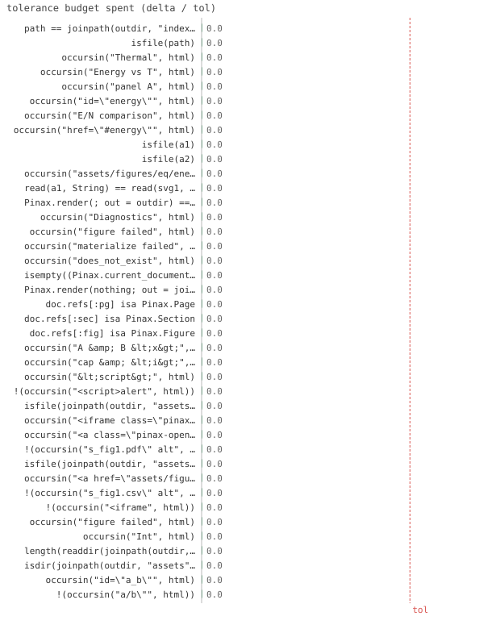

48/48 passed · 0.48s
| id | label | got | want | Δ vs tol (kind) | |
|---|---|---|---|---|---|
| ✓ | t585 | path == joinpath(outdir, "index.html") @ test_render.jl:28 code | 1.0 | 1.0 | 0.0 vs 0.5 (abs) |
| ✓ | t586 | isfile(path) @ test_render.jl:29 code | 1.0 | 1.0 | 0.0 vs 0.5 (abs) |
| ✓ | t587 | occursin("Thermal", html) @ test_render.jl:31 code | 1.0 | 1.0 | 0.0 vs 0.5 (abs) |
| ✓ | t588 | occursin("Energy vs T", html) @ test_render.jl:32 code | 1.0 | 1.0 | 0.0 vs 0.5 (abs) |
| ✓ | t589 | occursin("panel A", html) @ test_render.jl:33 code | 1.0 | 1.0 | 0.0 vs 0.5 (abs) |
| ✓ | t590 | occursin("id=\"energy\"", html) @ test_render.jl:34 code | 1.0 | 1.0 | 0.0 vs 0.5 (abs) |
| ✓ | t591 | occursin("E/N comparison", html) @ test_render.jl:35 code | 1.0 | 1.0 | 0.0 vs 0.5 (abs) |
| ✓ | t592 | occursin("href=\"#energy\"", html) @ test_render.jl:36 code | 1.0 | 1.0 | 0.0 vs 0.5 (abs) |
| ✓ | t593 | isfile(a1) @ test_render.jl:41 code | 1.0 | 1.0 | 0.0 vs 0.5 (abs) |
| ✓ | t594 | isfile(a2) @ test_render.jl:42 code | 1.0 | 1.0 | 0.0 vs 0.5 (abs) |
| ✓ | t595 | occursin("assets/figures/eq/energy/energy_fig1.svg", html) @ test_render.jl:43 code | 1.0 | 1.0 | 0.0 vs 0.5 (abs) |
| ✓ | t596 | read(a1, String) == read(svg1, String) @ test_render.jl:45 code | 1.0 | 1.0 | 0.0 vs 0.5 (abs) |
| ✓ | t597 | Pinax.render(; out = outdir) == path @ test_render.jl:48 code | 1.0 | 1.0 | 0.0 vs 0.5 (abs) |
| ✓ | t598 | occursin("Diagnostics", html) @ test_render.jl:61 code | 1.0 | 1.0 | 0.0 vs 0.5 (abs) |
| ✓ | t599 | occursin("figure failed", html) @ test_render.jl:62 code | 1.0 | 1.0 | 0.0 vs 0.5 (abs) |
| ✓ | t600 | occursin("materialize failed", html) @ test_render.jl:63 code | 1.0 | 1.0 | 0.0 vs 0.5 (abs) |
| ✓ | t601 | occursin("does_not_exist", html) @ test_render.jl:64 code | 1.0 | 1.0 | 0.0 vs 0.5 (abs) |
| ✓ | t602 | isempty((Pinax.current_document()).diag.entries) @ test_render.jl:66 code | 1.0 | 1.0 | 0.0 vs 0.5 (abs) |
| ✓ | t603 | Pinax.render(nothing; out = joinpath(tmp, "x")) @ test_render.jl:70 code | 1.0 | 1.0 | 0.0 vs 0.5 (abs) |
| ✓ | t604 | doc.refs[:pg] isa Pinax.Page @ test_render.jl:82 code | 1.0 | 1.0 | 0.0 vs 0.5 (abs) |
| ✓ | t605 | doc.refs[:sec] isa Pinax.Section @ test_render.jl:83 code | 1.0 | 1.0 | 0.0 vs 0.5 (abs) |
| ✓ | t606 | doc.refs[:fig] isa Pinax.Figure @ test_render.jl:84 code | 1.0 | 1.0 | 0.0 vs 0.5 (abs) |
| ✓ | t607 | occursin("A & B <x>", html) @ test_render.jl:97 code | 1.0 | 1.0 | 0.0 vs 0.5 (abs) |
| ✓ | t608 | occursin("cap & <i>", html) @ test_render.jl:98 code | 1.0 | 1.0 | 0.0 vs 0.5 (abs) |
| ✓ | t609 | occursin("<script>", html) @ test_render.jl:99 code | 1.0 | 1.0 | 0.0 vs 0.5 (abs) |
| ✓ | t610 | !(occursin("<script>alert", html)) @ test_render.jl:100 code | 1.0 | 1.0 | 0.0 vs 0.5 (abs) |
| ✓ | t611 | isfile(joinpath(outdir, "assets", "figures", "p", "s", "s_fig1.pdf")) @ test_render.jl:114 code | 1.0 | 1.0 | 0.0 vs 0.5 (abs) |
| ✓ | t612 | occursin("<iframe class=\"pinax-pdf\" src=\"assets/figures/p/s/s_fig1.pdf\"", html) @ test_render.jl:116 code | 1.0 | 1.0 | 0.0 vs 0.5 (abs) |
| ✓ | t613 | occursin("<a class=\"pinax-open\" href=\"assets/figures/p/s/s_fig1.pdf\"", html) @ test_render.jl:119 code | 1.0 | 1.0 | 0.0 vs 0.5 (abs) |
| ✓ | t614 | !(occursin("s_fig1.pdf\" alt", html)) @ test_render.jl:122 code | 1.0 | 1.0 | 0.0 vs 0.5 (abs) |
| ✓ | t615 | isfile(joinpath(outdir, "assets", "figures", "p", "s", "s_fig1.csv")) @ test_render.jl:136 code | 1.0 | 1.0 | 0.0 vs 0.5 (abs) |
| ✓ | t616 | occursin("<a href=\"assets/figures/p/s/s_fig1.csv\"", html) @ test_render.jl:137 code | 1.0 | 1.0 | 0.0 vs 0.5 (abs) |
| ✓ | t617 | !(occursin("s_fig1.csv\" alt", html)) @ test_render.jl:138 code | 1.0 | 1.0 | 0.0 vs 0.5 (abs) |
| ✓ | t618 | !(occursin("<iframe", html)) @ test_render.jl:139 code | 1.0 | 1.0 | 0.0 vs 0.5 (abs) |
| ✓ | t619 | occursin("figure failed", html) @ test_render.jl:151 code | 1.0 | 1.0 | 0.0 vs 0.5 (abs) |
| ✓ | t620 | occursin("Int", html) @ test_render.jl:152 code | 1.0 | 1.0 | 0.0 vs 0.5 (abs) |
| ✓ | t621 | length(readdir(joinpath(outdir, "assets", "figures", "p", "s"))) == 2 @ test_render.jl:166 code | 1.0 | 1.0 | 0.0 vs 0.5 (abs) |
| ✓ | t622 | isdir(joinpath(outdir, "assets", "figures", "a_b", "s")) @ test_render.jl:179 code | 1.0 | 1.0 | 0.0 vs 0.5 (abs) |
| ✓ | t623 | occursin("id=\"a_b\"", html) @ test_render.jl:180 code | 1.0 | 1.0 | 0.0 vs 0.5 (abs) |
| ✓ | t624 | !(occursin("a/b\"", html)) @ test_render.jl:181 code | 1.0 | 1.0 | 0.0 vs 0.5 (abs) |
| ✓ | t625 | occursin("Alpha <span class=\"nfig\">(2)</span>", html) @ test_render.jl:198 code | 1.0 | 1.0 | 0.0 vs 0.5 (abs) |
| ✓ | t626 | occursin("Beta <span class=\"nfig\">(1)</span>", html) @ test_render.jl:199 code | 1.0 | 1.0 | 0.0 vs 0.5 (abs) |
| ✓ | t627 | occursin("href=\"#a\" style=\"margin-left:1.2rem\">Alpha <span class=\"nfig\">(2)</span>", html) @ test_render.jl:201 code | 1.0 | 1.0 | 0.0 vs 0.5 (abs) |
| ✓ | t628 | occursin("<div class=\"pinax-meta\">3 figures</div>", html) @ test_render.jl:206 code | 1.0 | 1.0 | 0.0 vs 0.5 (abs) |
| ✓ | t629 | occursin("<div class=\"pinax-meta\">1 figure</div>", html) @ test_render.jl:218 code | 1.0 | 1.0 | 0.0 vs 0.5 (abs) |
| ✓ | t630 | occursin("<table class='cov'><tr><td>24</td></tr></table>", html) @ test_render.jl:232 code | 1.0 | 1.0 | 0.0 vs 0.5 (abs) |
| ✓ | t631 | !(occursin("<table class='cov'", html)) @ test_render.jl:233 code | 1.0 | 1.0 | 0.0 vs 0.5 (abs) |
| ✓ | t632 | di < ti < fi @ test_render.jl:237 code | 1.0 | 1.0 | 0.0 vs 0.5 (abs) |

⤓ downloadoutdir = joinpath(tmp, "site")
Pinax.reset!()
path = Pinax.render(; out=outdir)
@test path == joinpath(outdir, "index.html")@test isfile(path)html = read(path, String)
@test occursin("Thermal", html) # page title@test occursin("Energy vs T", html) # section title@test occursin("panel A", html) # caption@test occursin("id=\"energy\"", html) # section anchor@test occursin("E/N comparison", html) # desc rendered@test occursin("href=\"#energy\"", html) # index/TOC linka1 = joinpath(outdir, "assets", "figures", "eq", "energy", "energy_fig1.svg")
a2 = joinpath(outdir, "assets", "figures", "eq", "energy", "energy_fig2.svg")
@test isfile(a1)@test isfile(a2)@test occursin("assets/figures/eq/energy/energy_fig1.svg", html)@test read(a1, String) == read(svg1, String)@test Pinax.render(; out=outdir) == pathout2 = joinpath(tmp, "site2")
Pinax.reset!()
path = Pinax.render(; out=out2) # must not throw
html = read(path, String)
@test occursin("Diagnostics", html)@test occursin("figure failed", html)@test occursin("materialize failed", html) # render-phase diagnostic shown in the page@test occursin("does_not_exist", html)@test isempty(Pinax.current_document().diag.entries)@test_throws ErrorException Pinax.render(nothing; out=joinpath(tmp, "x"))Pinax.reset!()
doc = Pinax.current_document()
Pinax.resolve!(doc)
@test doc.refs[:pg] isa Pinax.Page@test doc.refs[:sec] isa Pinax.Section@test doc.refs[:fig] isa Pinax.Figureoutdir = joinpath(tmp, "esc")
Pinax.reset!()
html = read(Pinax.render(; out=outdir), String)
@test occursin("A & B <x>", html)@test occursin("cap & <i>", html)@test occursin("<script>", html)@test !occursin("<script>alert", html) # raw script must not survivepdf = joinpath(tmp, "doc.pdf")
write(pdf, "%PDF-1.4 stub")
outdir = joinpath(tmp, "pdf")
Pinax.reset!()
html = read(Pinax.render(; out=outdir), String)
@test isfile(joinpath(outdir, "assets", "figures", "p", "s", "s_fig1.pdf"))@test occursin(
"<iframe class=\"pinax-pdf\" src=\"assets/figures/p/s/s_fig1.pdf\"", html
)@test occursin(
"<a class=\"pinax-open\" href=\"assets/figures/p/s/s_fig1.pdf\"", html
)@test !occursin("s_fig1.pdf\" alt", html) # not emitted as <img>csv = joinpath(tmp, "data.csv")
write(csv, "x,y\n1,2\n")
outdir = joinpath(tmp, "csv")
Pinax.reset!()
html = read(Pinax.render(; out=outdir), String)
@test isfile(joinpath(outdir, "assets", "figures", "p", "s", "s_fig1.csv"))@test occursin("<a href=\"assets/figures/p/s/s_fig1.csv\"", html)@test !occursin("s_fig1.csv\" alt", html) # not an <img>@test !occursin("<iframe", html) # not embedded (the CSS class is always present)outdir = joinpath(tmp, "badval")
Pinax.reset!()
html = read(Pinax.render(; out=outdir), String) # must not throw
@test occursin("figure failed", html)@test occursin("Int", html) # error mentions the produced typeoutdir = joinpath(tmp, "rerender")
Pinax.reset!()
Pinax.render(; out=outdir)
Pinax.render(; out=outdir)
@test length(readdir(joinpath(outdir, "assets", "figures", "p", "s"))) == 2outdir = joinpath(tmp, "unsafe")
Pinax.reset!()
html = read(Pinax.render(; out=outdir), String)
# no path traversal: page dir is the sanitized anchor, assets stay under outdir
@test isdir(joinpath(outdir, "assets", "figures", "a_b", "s"))@test occursin("id=\"a_b\"", html)@test !occursin("a/b\"", html) # raw slash never in an id attributeoutdir = joinpath(tmp, "counts1")
Pinax.reset!()
html = read(Pinax.render(; out=outdir), String)
@test occursin("<div class=\"pinax-meta\">1 figure</div>", html)outdir = joinpath(tmp, "rawpanel")
Pinax.reset!()
html = read(Pinax.render(; out=outdir), String)
@test occursin("<table class='cov'><tr><td>24</td></tr></table>", html) # verbatim@test !occursin("<table class='cov'", html) # NOT escapeddi = findfirst("intro prose", html).start
ti = findfirst("class='cov'", html).start
fi = findfirst("s_fig1.svg", html).start
@test di < ti < fi # desc, then @raw panel, then figures{kind=link}